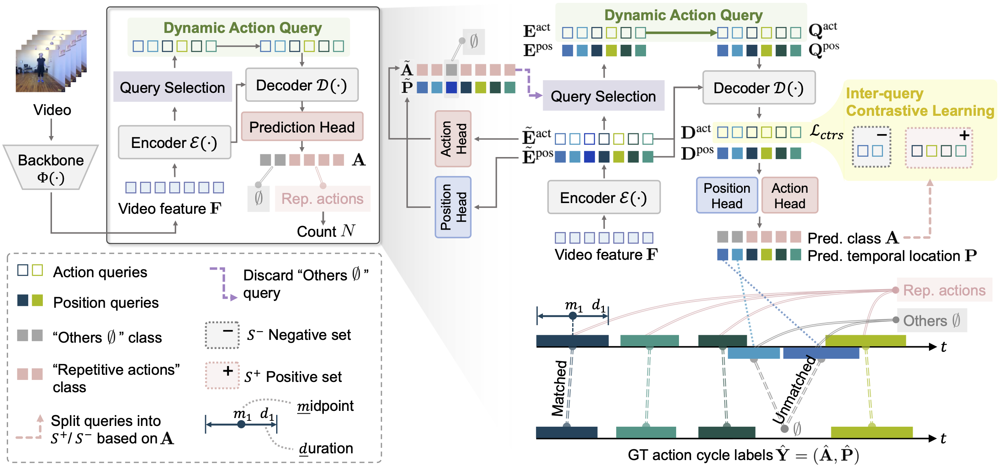

Efficient Action Counting with Dynamic Queries
- Zishi Li1*
- Xiaoxuan Ma1*
- Qiuyan Shang1
- Wentao Zhu1
- Hai Ci1
- Yu Qiao2
- Yizhou Wang1
1Peking University
2Shanghai Jiao Tong University
*Equal contribution
TL;DR: We provide a novel perspective to tackle the Temporal Repetition Counting problem using a simple yet effective representation for action cycles, reducing the computational complexity from quadratic to linear with SOTA performance.
Abstract
Most existing methods rely on the similarity correlation matrix to characterize the repetitiveness of actions, but their scalability is hindered due to the quadratic computational complexity. In this work, we introduce a novel approach that employs an action query representation to localize repeated action cycles with linear computational complexity. Based on this representation, we develop two key components to tackle the essential challenges of temporal repetition counting. Firstly, to facilitate open-set action counting, we propose the dynamic update scheme on action queries. Unlike static action queries, this approach dynamically embeds video features into action queries, offering a more flexible and generalizable representation. Secondly, to distinguish between actions of interest and background noise actions, we incorporate inter-query contrastive learning to regularize the video representations corresponding to different action queries. As a result, our method significantly outperforms previous works, particularly in terms of long video sequences, unseen actions, and actions at various speeds. On the challenging RepCountA benchmark, we outperform the state-of-the-art method TransRAC by 26.5% in OBO accuracy, with a 22.7% mean error decrease and 94.1% computational burden reduction. Code will be publicly available.
Video
Framework
{kind=link}
Results
We visualize the predictions of our approach. Each colored block denotes the estimated action interval. The counting result is shown above the video.
Comparison to SOTA
We compare our method with SOTA method TransRAC. TransRAC represents the results by density map, and the final count value is obtained by summing the values in the density map.
Citation
Template courtesy of Jon Barron.